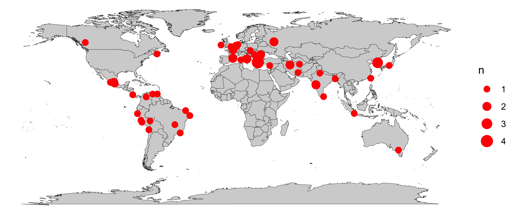
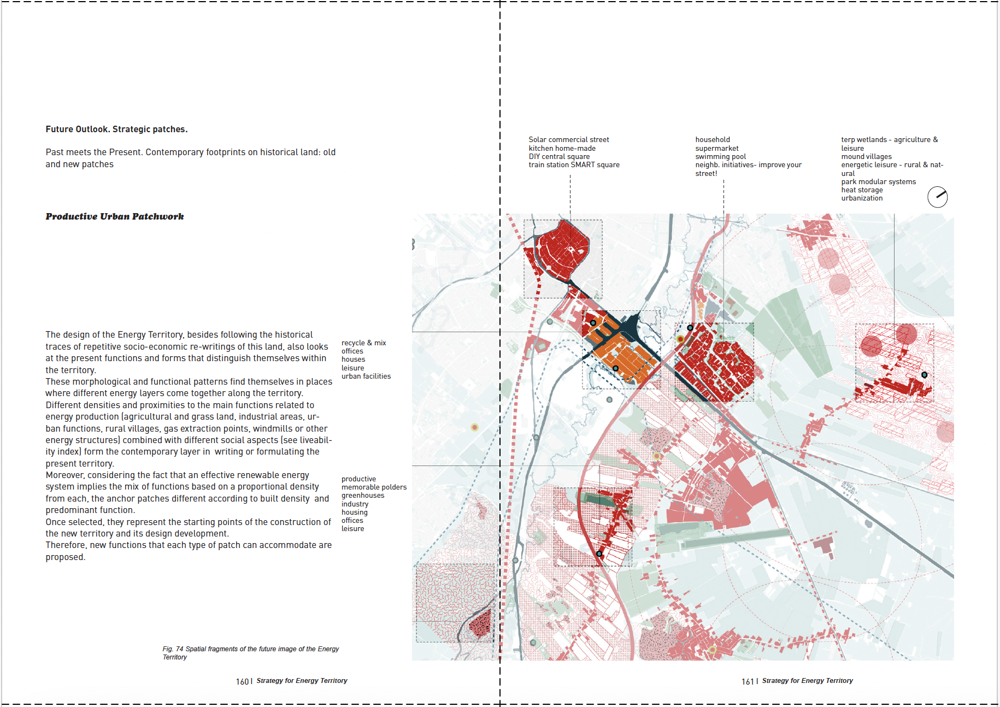
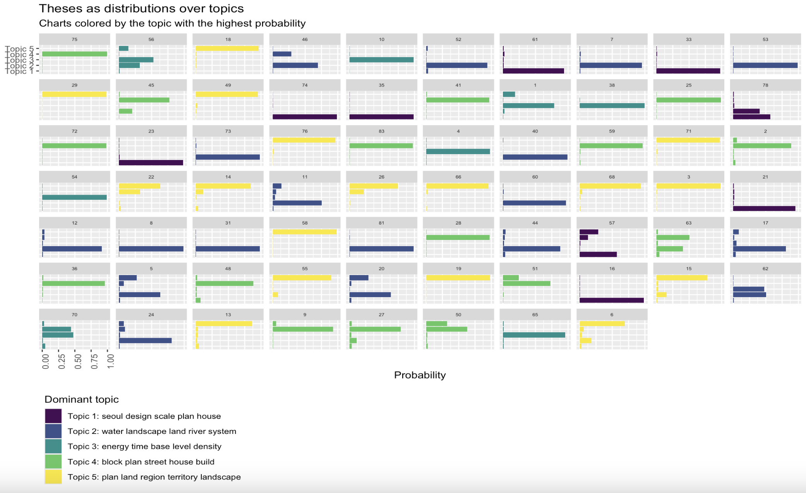
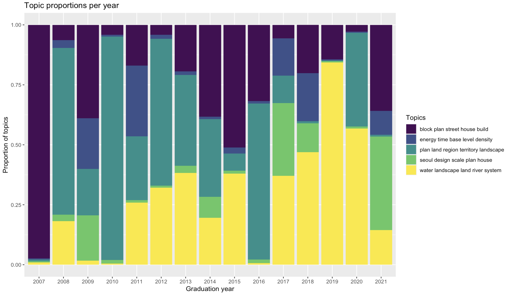
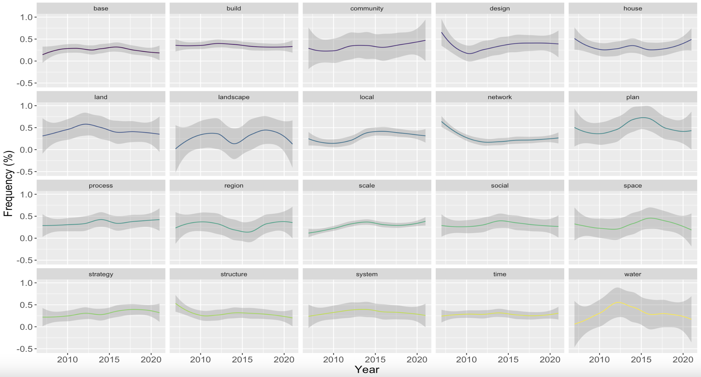

mintEMU
Mining Theses: The Case of the
European post-Master in Urbanism (EMU) at TU Delft
![]()
2024-06-20
Outline
- The EMU programme
- Methods
- Results
- Thesis mining beyond the EMU
The EMU programme
- A post-master program run between 2005-2021 at TU Delft
- Exchange at IUAV Venice, KU Leuven & UPC Barcelona
- Bridge towards advanced practice and research careers
The EMU programme
- Impact on education, research and practice
- Global geographic scope

The EMU programme
- What is the legacy of the EMU?
- What were the main topics taught in the EMU and how did those topics evolve over the years?
Methods: approach
The intuition behind an LDA model (Blei, 2012)
Methods: data
- PDFs and written consent from the authors obtained for 68 theses (71% of all theses), including at least one thesis
from all graduation years between 2007-2021 - An average of 23,000 words
per thesis - Written (mostly) in English

Methods: pre-processing
- PDF text extraction →
text_raw - Removal of hyphenation, page numbers, titles, author names →
text_clean - Unique identifier for each thesis →
ID - Selection of relevant metadata →
title,grad_year,loc,lat,lon
Methods: topic model
- Tokens: words + concatenated bigrams and trigrams
- Stop words: Snowball lexicon + custom global, subject and document stopwords + lemmatisation → N = 740,839 words
- DTM with global frequencies >5, resulting in a vocabulary V = 6,601 words
- LDA with K = 5 qualitatively defined topics
Results
| Topic | Prop. |
|---|---|
| plan land region territory landscape | 0.26 |
| water landscape land river system | 0.26 |
| block plan street house build | 0.24 |
| seoul design scale plan house | 0.13 |
| energy time base level density | 0.11 |
| University | Topic |
|---|---|
| TU Delft | Urban region networks |
| Constructing the sustainable city | |
| IUAV Venice | Territories of dispersion: Situations, Scenarios |
| KU Leuven | Landscape Urbanism (topic undefined) |
| UPC Barcelona | Urban Transformations |
Results
I have 5 topics, each described by 100 words. The keywords are as follows:
- The words for Topic 1 are: seoul design scale plan house study social build function network building structure society process cultural strategy time activity block chapter public residential district propose landscape space cultural_heritage center element street system exist site local image people base analysis historic level park water condition ikseon provide approach construction brasilia form research heritage apartment_complexes green relate type environment pattern concept land connect infrastructure due principle context piraeus economic result develop change service connection centre increase traditional population live method industrial private leave facility inside commercial include cluster amount role community policy density complex government physical quality square life character locate understand program.
- The words for Topic 2 are: water landscape land river system design process region strategy develop plan local build structure territory nature infrastructure community potential propose scale provide activity agriculture understand exist house flood base ecological natural people research social condition time settlement space forest increase create future approach result road economic environment form green site network type due study service connect change lima wetland function concept population context datum integrate almere industry soil urbanization public support resource slope construction industrial current field lead analysis regional live patch connection environmental town transformation national model level market country layer quality capacity term government park corridor issue cultural.
- The words for Topic 3 are: energy time base level density form indicator potential land study centre plan model analysis design define street site location relation increase research network strategy social change function tib scenario territory mobility build residential term space local movement test accessibility service income dharavi datum control car society future park mashhad parcel type integration shrine access relate exist method population job principle connect result road process pilgrim building energy_consumption system house mix shop global religious mean permeability facility deal people low center develop output measure chapter capacity infrastructure economic transport tehran due integrate structure cost include demand parameter link propose scale zone.
- The words for Topic 4 are: block plan street house build public space social border process study strategy design community people network athens population plot building time public_space private centre structure park scale local public_spaces void land activity provide develop research locate station analysis neighbourhood function form road base naples service change municipality construction density context market district gate condition potential system result exist proposal create gate_community residential connect mean access amount cucuta live center due relate resident define urbanity parameter level type control car start square pedestrian line accessibility paris close recife aim include neighborhood shop period mix transformation propose term informal major fabric industrial.
- The words for Topic 5 are: plan land region territory landscape rural scale system exist base process build community future metropolitan airport strategy potential form house structure infrastructure resource design network local park space scenario growth increase condition regional time connect service corridor green production mobility zone social centre approach water develop economic population propose analysis change level understand current line policy public provide settlement post result term industry people north mexico opportunity natural relate concept study access role transport node industrial relation final economy town public_transport challenge river country agriculture limit ring connection create leave locate principle agricultural socialist village site due mean construction political.
How would you name these topics? Use maximum three words to name the topics and provide a one-sentence description for each.
Results
Topic 1: Urban Cultural Heritage
Description: This topic explores the integration of cultural heritage and urban development in cities such as Seoul and Ikseon, focusing on maintaining historical integrity while adapting to contemporary needs and infrastructure.
Topic 2: Ecological Landscape Planning
Description: This topic emphasizes sustainable land and water management in landscapes like Lima and Almere, advocating for ecological integration and agricultural development to support both natural and built environments.
Topic 3: Energy and Urban Mobility
Description: This topic examines the interplay between energy consumption, urban transportation systems, and city structure, focusing on how these elements impact accessibility, economic vitality, and residential dynamics in urban areas like Dharavi and Tehran.
Topic 4: Urban Public Communities
Description: This topic focuses on the design and development of urban public spaces and communities, analyzing how these elements influence social interaction, accessibility, and neighborhood dynamics in cities such as Athens and Naples.
Topic 5: Regional Development Strategies
Description: This topic explores the planning and development strategies for regional growth, particularly in rural and metropolitan contexts, with an emphasis on transportation infrastructure, agricultural policy, and economic opportunities in areas like North Mexico.
Results
Results
Results
More about mintEMU
- Research compendium (R package)
- Dataset to be published on 4TU.ResearchData
- Paper to be submitted to the Journal of Planning Education and Research
- Shiny dashboard for interactive exploration
Beyond mintEMU
- Evaluating topic dynamics in theses and planning education accordingly
- Evaluating the reciprocal impact between education and society
- Improved assessment based on past data
- Predicting the evolution of thesis topics
- Classifying published theses based on their content
Ways forward
- Larger datasets (more theses, more universities, improved consent procedure)
- Improving preprocessing (front/back matter removal, thesis structure detection)
- Improving the balance between interpretability and complexity in the topic model (qualitative vs. empirical \(K\))
A thesis mining package mint?